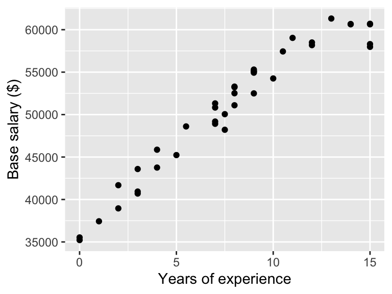
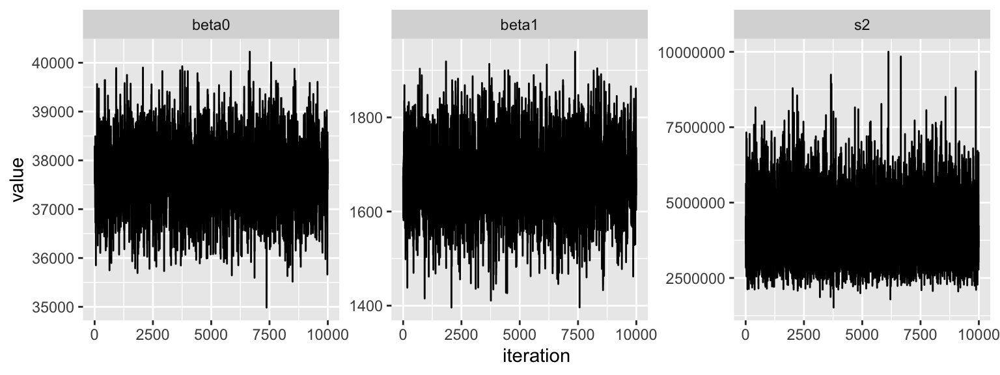
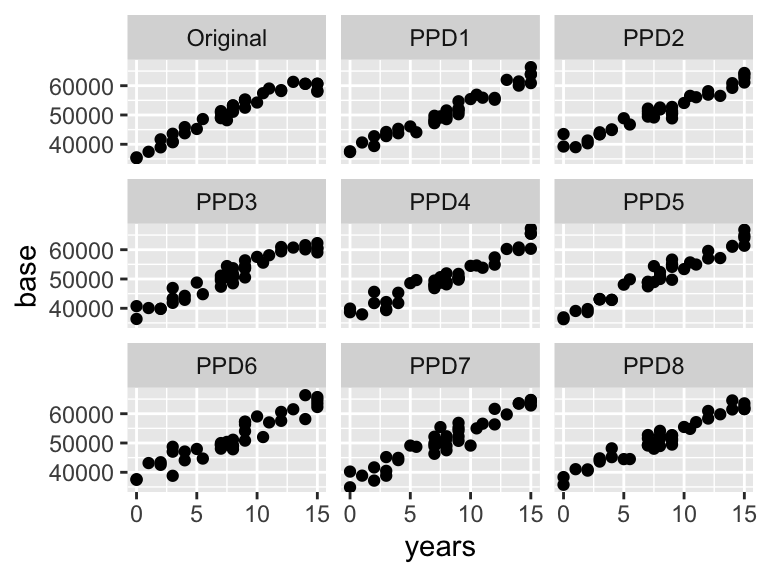
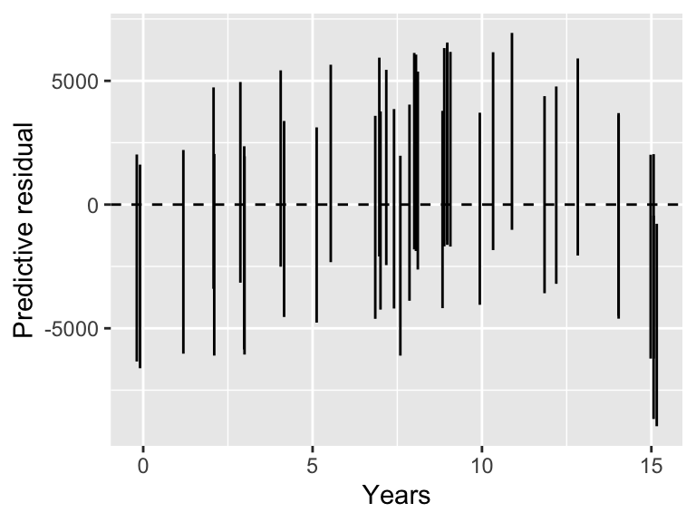
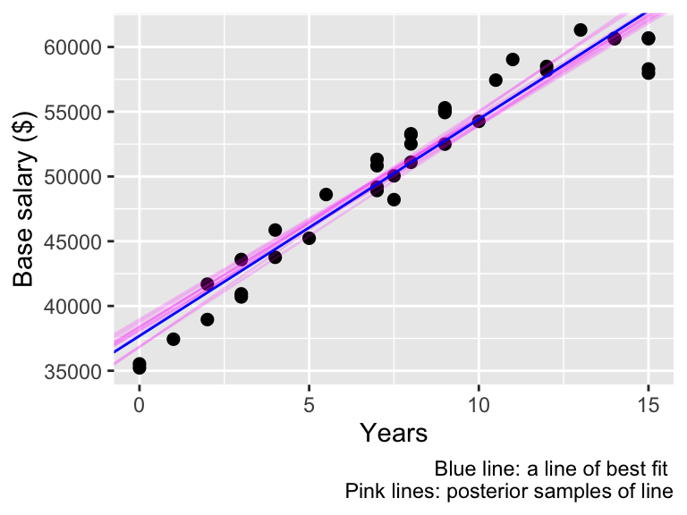
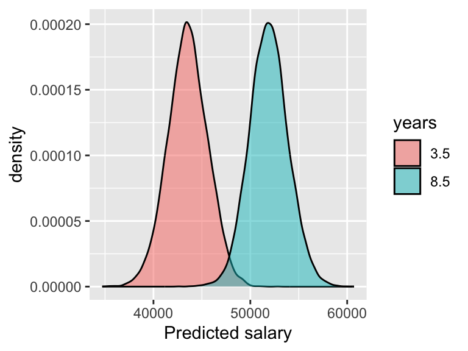

| id | degree | fte | years | base |
|---|---|---|---|---|
| 01 | BA | 1 | 5 | 45231.39 |
| 02 | MA | 1 | 15 | 60694.91 |
| 04 | BA | 1 | 10 | 54257.09 |
| 07 | BA | 1 | 12 | 58495.82 |
| 11 | BA | 1 | 12 | 58179.38 |
Bayes Simple Linear Regression
Data and EDA
We have data that contains teacher salaries from 2009-2010 for teachers employed by the St. Louis Public School in Michigan. The dataset has been filtered to retain only teachers with at most 15 years of service and who have a full teaching load (FTE). This leaves in total 39 teachers. I have modified the data slightly to make this analysis more interesting.
We have the following variables:
id: Identification code for each teacher, assigned randomlydegree: Highest educational degree attained: BA (bachelor’s degree) or MA (master’s degree)years: Number of years employed by the school districtbase: Base annual salary, in dollars.
We have the following snapshot of the data:
Suppose I’m a teacher who is moving to Michican, and I’m interested in learning what kind of salary I could expect to earn. I know that salaries are related in some way to years of experience, so let’s do some EDA to see the empirical relationship between years of experience and base salary at this public school:

What do we notice?
Fitting a SLR
I will fit a SLR model to these data, regressing base salary on years of experience (ignoring degree for now). Thus, in context, my SLR looks like the following:
\[\text{base}_{i} = \beta_{0} + \beta_{1} \text{years}_{i} + \epsilon_{i} \] \[\epsilon_{i} \overset{iid}{\sim} N(0, \sigma^2) \qquad \quad i = 1,\ldots, n = 46\]
Prior solicitation 1
My priors might be specified as follows:
\[\beta_{0} \sim N(0, 100^2)\] \[\beta_{1} \sim N(0, 100^2)\] \[\frac{1}{\sigma^2} \sim \text{Gamma}(1,1)\]
What’s possibly wrong with this prior specification??
Prior solicitation 2
Let’s choose the following new priors:
\[\beta_{0} \sim N(50000, 10000^2)\] \[\beta_{1} \sim N(0, 10000^2)\]
To approximate the joint posterior distribution, I will run a Gibbs sampler for 20000 iterations, throwing the first half away to burn-in.
Diagnostics
Here are some traceplots:

The effective sample sizes of \(\beta_{0}, \beta_{1}, \sigma^2\) from these 10000 iterations are: 1340.28, 1291.16, 8044.04. Why do we think some of these are so low?
Model assessment
Posterior predictive check
To assess the fit of a SLR model, one approach is to generate PPDs and compare them (visually) to the original data. Once again, we want the observed response values to be consistent with predicted responses generated from the fitted model. So, as before, let’s generate some PPDs. For \(k in 1:K\):
- Obtain posterior values of \(\beta_{0}, \beta_{1}, \sigma_{2}\), call these \(\beta^*_{0}, \beta^{*}_{1}, \sigma^{2*}\)
- Sample \(\mathbf{y}^{*} = \{y^{*}_{1},\ldots,y_{n}^{*} \}\) where the sample size \(n= 39\) and \(y_{i}^{*} \sim N(\beta^*_{0}+ \beta^{*}_{1} x_{i}, \sigma^{2*})\). Note that these \(x_{i}\) are the same as in the original data, as they are assumed fixed!

What do we notice?
Residuals
When fitting a linear regression model, a very common way of assessing model fit is to look at the residuals: \(e_{i} = y_{i} - \hat{y}_{i}\) where \(\hat{y}_{i}\) is the fitted/estimated value of the \(i\)-th response. We should ideally have residuals close to 0. Additionally, residuals shouldn’t “look” very different from different values of \(x_{i}\) (i.e. we don’t want to do better at predicting certain observations than others).
To do this, as before, for some number \(K\) times:
- Obtain parameter values from the posterior
- Simulate \(y_{i}^*\) from its corresponding Normal distribution using the posterior values from 1.
- Obtain \(e_{i} = y_{i} - y_{i}^*\)
Because the predicted values are random, so are the residuals \(e_{i}\). So, unlike in frequentist methods, we don’t plot the “usual” residual plot of fitted vs residuals. We will instead plot credible intervals of the residuals for each observation \(i\)! Thus, in this diagnostic, we should choose \(K\) large (e.g. the total number of iterations after burn-in) so we get good approximations of the CIs.

What do we notice here?
Posterior inference
Regardless of what we determined above about model fit, let’s continue with doing some posterior inference.
Posterior summaries
Here are some posterior summaries of the three parameters:
Let’s give some interpretation!
Line of best fit
Let’s obtain a line of “best fit” (note that a is italicized because there is not a notion of a single best line). One might obtain such a line by taking the posterior mean estimates \((\hat{\beta}_{0}, \hat{\beta}_{1})\) of \((\beta_{0}, \beta_{1})\), and use them to plot the line \(\hat{y} = \hat{\beta}_{0} + \hat{\beta}_{1} x\)
If we use the posterior means as the estimates, then this “best line” represents the most likely value of the line \(\beta_{0} + \beta_{1} x\) from the posterior distribution. To include some notion of uncertainty of this “best line”, we might also plot some number of \(J\) line estimates where we take samples \((\beta_{0}^{(j)}, \beta_{1}^{(j)})\) from the posterior (i.e. Gibbs sampler) and plot \(\beta_{0}^{(j)} + \beta_{1}^{(j)} x\)
set.seed(1)
J <- 10
iter_samps <- sample(1:G, J)
post_means <- colMeans(POSTS)
ggplot(teachers, aes(x = years, y = base)) +
geom_point(size=2) +
geom_abline(data=post_df[iter_samps, ],
aes(intercept=beta0, slope=beta1),
alpha = 0.2, col = "magenta") +
geom_abline(intercept = post_means[1],
slope = post_means[2], col = "blue") +
ylab("Base salary ($)") + xlab("Years") +
labs(caption = "Blue line: a line of best fit \n Pink lines: posterior samples of line")
What do we notice?
Predicted responses
I have approximately 3.5 years of teaching experience and my friend has approximately 8.5 years. I might like to know what sort of ranges of base salaries we might expect to earn. To answer this question, why not obtain the posterior density of base salaries for each of \(x^{*} = 3.5\) and \(x^{*} = 8.5\)? Let us do that by doing the following for \(k = 1,\ldots K\) (once again, with \(K\) large):
- Simulate the expected earnings at a given level of years of experience: \[\mathbb{E}[Y | \beta_{0}^{(k)} + \beta_{1}^{(k)} \times x^{*}]^{(k)} \equiv \mu^{(k)}\]
- Sample the earnings at this mean: \[Y^{*(k)} \sim N(\mu^{(k)}, {\sigma^{2}}^{(k)})\]
